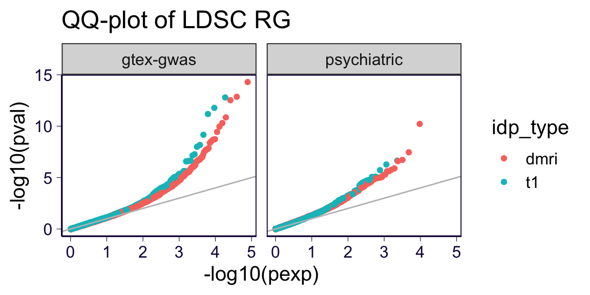
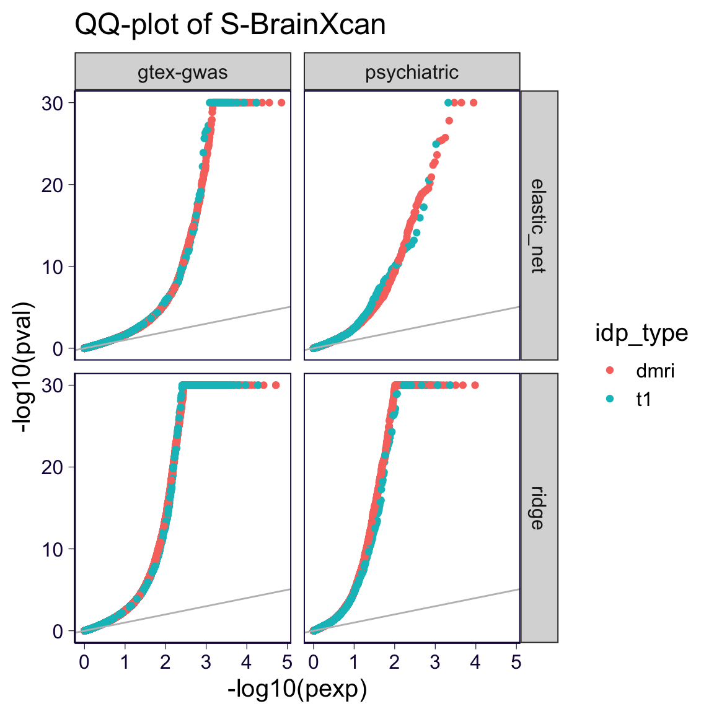
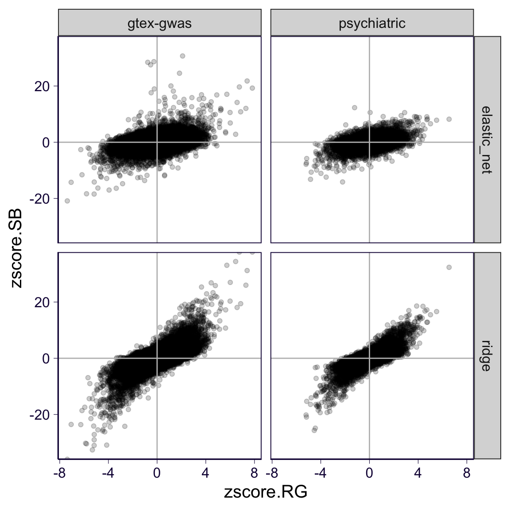
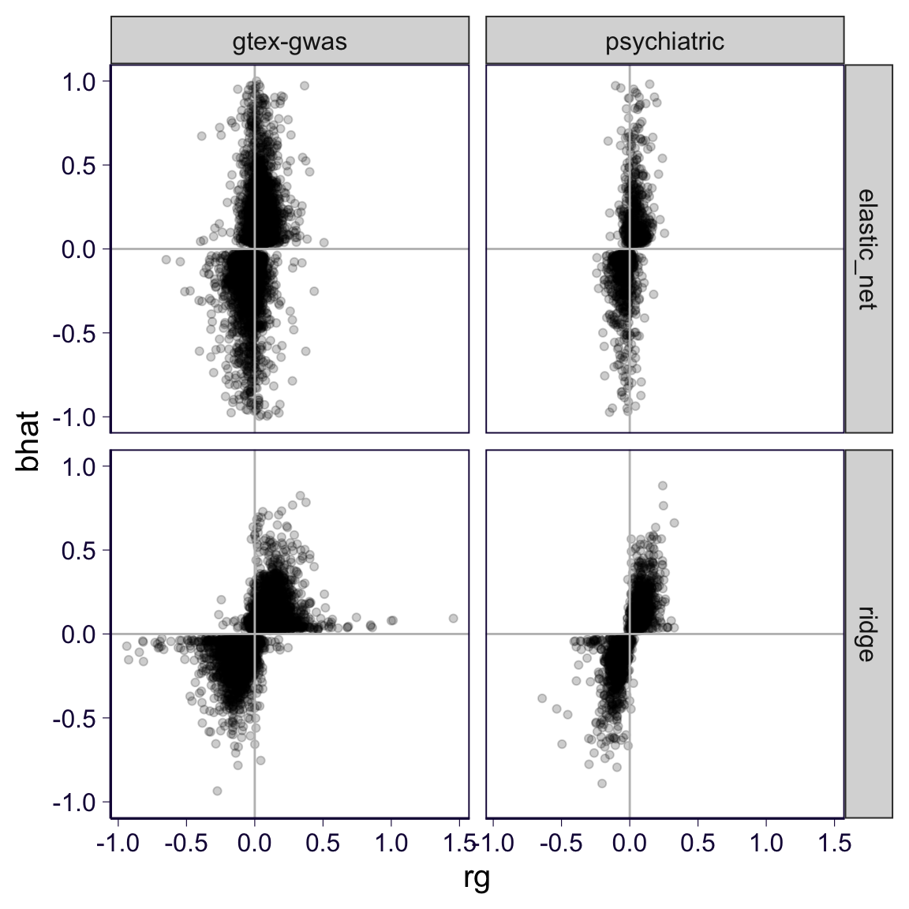
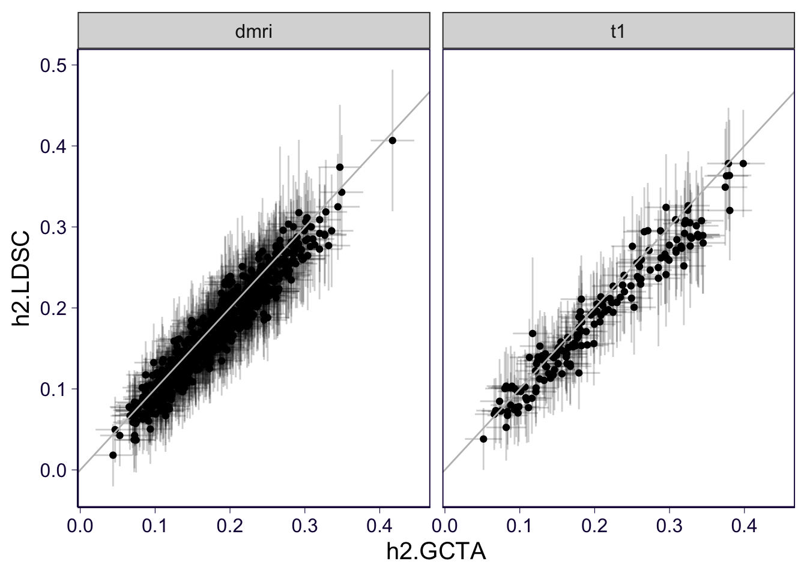

rm(list = ls())
library(ggplot2)
theme_set(theme_bw(base_size = 15))
source('https://gist.githubusercontent.com/liangyy/43912b3ecab5d10c89f9d4b2669871c9/raw/3ca651cfa53ffccb8422f432561138a46e93710f/my_ggplot_theme.R')
source('https://raw.githubusercontent.com/liangyy/misc-tools/master/plot_tool/plot_tools.R')
library(dplyr)
options(stringsAsFactors = F)
library(patchwork)
library(ggrepel)
library(data.table)
options(datatable.fread.datatable = F)
source('rlib.R')
library(VennDiagram)
library(ggpubr)Here we present the first set of genetic correltaion results between IDPs and phenotypes of interest. We compare the genetic correlation results to the S-BrainXcan. We considered GTEx-GWAS phenotypes and the psychiatric phenotypes
Load S-BrainXcan.
traits = read.table('../submission/simagexcan/gtex_gwas_list.txt')$V1
models = c('ridge', 'elastic_net')
tags = list(dmri = 'dmri.original.all_covar.w_pc', t1 = 't1.scaled.all_covar.w_pc')
df = list()
for(rr in traits) {
for(nn in names(tags)) {
for(mm in models) {
tmp = paste0('~/Desktop/tmp/ukb_idp/simagexcan/results_gtex_gwas_2nd/', tags[[nn]], '.gw_', mm, '_beta_x_', rr, '_x_simagexcan.csv')
df[[length(df) + 1]] = read.csv(tmp) %>%
mutate(idp_type = nn, phenotype = rr, model = mm)
}
}
}
df = do.call(rbind, df)
df_sb1 = df %>% mutate(zscore = p2z(pval, bhat))
# df = df %>% filter(is.na(stringr::str_match(IDP, 'PC')[, 1]))Load genetic correlation results.
df = list()
for(rr in traits) {
for(nn in names(tags)) {
tmp = paste0('~/Desktop/tmp/ukb_idp/genetic_cor_2nd/', nn, '_2nd_x_gtex-gwas_x_', rr, '.ldsc_rg.log')
tmp = load_ldsc_rg(tmp)
tmp = tmp %>% select(p2, rg, p, z, h2_obs, h2_obs_se) %>% rename(IDP = p2, pval = p, zscore = z)
df[[length(df) + 1]] = tmp %>%
mutate(idp_type = nn, phenotype = rr)
}
}
df_cor1 = do.call(rbind, df)Load S-BrainXcan.
traits = read.table('../misc_data/preprocess_psychiatric_traits/trait_list.txt')$V1
models = c('ridge', 'elastic_net')
tags = list(dmri = 'dmri.original.all_covar.w_pc', t1 = 't1.scaled.all_covar.w_pc')
df = list()
for(rr in traits) {
for(nn in names(tags)) {
for(mm in models) {
tmp = paste0('~/Desktop/tmp/ukb_idp/simagexcan/results_psychiatric_2nd/', tags[[nn]], '.gw_', mm, '_beta_x_', rr, '_x_simagexcan.csv')
df[[length(df) + 1]] = read.csv(tmp) %>%
mutate(idp_type = nn, phenotype = rr, model = mm)
}
}
}
df = do.call(rbind, df)
df_sb2 = df %>% mutate(zscore = p2z(pval, bhat))
# df = df %>% filter(is.na(stringr::str_match(IDP, 'PC')[, 1]))Load genetic correlation results.
df = list()
for(rr in traits) {
for(nn in names(tags)) {
tmp = paste0('~/Desktop/tmp/ukb_idp/genetic_cor_2nd/', nn, '_2nd_x_psychiatric_x_', rr, '.ldsc_rg.log')
tmp = load_ldsc_rg(tmp)
tmp = tmp %>% select(p2, rg, p, z, h2_obs, h2_obs_se) %>% rename(IDP = p2, pval = p, zscore = z)
df[[length(df) + 1]] = tmp %>%
mutate(idp_type = nn, phenotype = rr)
}
}
df_cor2 = do.call(rbind, df)df = list()
for(rr in traits) {
for(nn in names(tags)) {
tmp = paste0('~/Desktop/tmp/ukb_idp/heritability_2nd_round/', tags[[nn]], '.tsv.gz')
df[[length(df) + 1]] = read.table(tmp, sep = '\t', header = T) %>% mutate(idp_type = nn) %>% rename(IDP = phenotype)
}
}
df_h2 = do.call(rbind, df)df_sb = rbind(
df_sb1 %>% mutate(data = 'gtex-gwas'),
df_sb2 %>% mutate(data = 'psychiatric')
)
df_cor = rbind(
df_cor1 %>% mutate(data = 'gtex-gwas'),
df_cor2 %>% mutate(data = 'psychiatric')
)df_cor %>% group_by(data, idp_type) %>% mutate(pexp = rank(pval) / (n() + 1)) %>% ungroup() %>%
ggplot() + geom_point(aes(x = -log10(pexp), y = -log10(pval), color = idp_type)) + facet_wrap(~data) + th2 +
geom_abline(slope = 1, intercept = 0, color = 'gray') +
ggtitle('QQ-plot of LDSC RG')## Warning: Removed 2544 rows containing missing values (geom_point).
df_sb %>% group_by(data, idp_type, model) %>% mutate(pexp = rank(pval) / (n() + 1)) %>% ungroup() %>%
mutate(pval = pmax(pval, 1e-30)) %>%
ggplot() + geom_point(aes(x = -log10(pexp), y = -log10(pval), color = idp_type)) + facet_grid(model~data) + th2 +
geom_abline(slope = 1, intercept = 0, color = 'gray') +
ggtitle('QQ-plot of S-BrainXcan')
tmp = inner_join(df_sb, df_cor, by = c('phenotype', 'idp_type', 'IDP', 'data'), suffix = c('.SB', '.RG'))
tmp %>% ggplot() + geom_point(aes(x = zscore.RG, y = zscore.SB), alpha = 0.2) + facet_grid(model~data) + th2 + geom_hline(yintercept = 0, color = 'gray') + geom_vline(xintercept = 0, color = 'gray')## Warning: Removed 4878 rows containing missing values (geom_point).
# tmp = inner_join(df_sb, df_cor, by = c('phenotype', 'idp_type', 'IDP', 'data'), suffix = c('.SB', '.RG'))
tmp %>% filter(pval.SB < 1e-2) %>% ggplot() + geom_point(aes(x = rg, y = bhat), alpha = 0.2) + facet_grid(model~data) + th2 +
scale_y_continuous(lim = c(-1, 1)) +
geom_hline(yintercept = 0, color = 'gray') + geom_vline(xintercept = 0, color = 'gray')## Warning: Removed 837 rows containing missing values (geom_point).
tmp = inner_join(df_h2, df_cor, by = c('idp_type', 'IDP'), suffix = c('.GCTA', '.LDSC'))
tmp = tmp %>% group_by(IDP, idp_type) %>%
summarize(
h2.LDSC = mean(h2_obs), h2_se.LDSC = max(h2_obs_se),
h2.GCTA = h2[1], h2_se.GCTA = h2_SE[1]
) %>% ungroup()## `summarise()` regrouping output by 'IDP' (override with `.groups` argument)tmp %>% ggplot() + geom_point(aes(x = h2.GCTA, y = h2.LDSC)) +
geom_errorbar(aes(x = h2.GCTA, ymin = h2.LDSC - 1.96 * h2_se.LDSC, ymax = h2.LDSC + 1.96 * h2_se.LDSC), alpha = 0.2) +
geom_errorbarh(aes(y = h2.LDSC, xmin = h2.GCTA - 1.96 * h2_se.GCTA, xmax = h2.GCTA + 1.96 * h2_se.GCTA), alpha = 0.2) +
facet_wrap(~idp_type) + th2 + geom_abline(slope = 1, intercept = 0, color = 'gray')